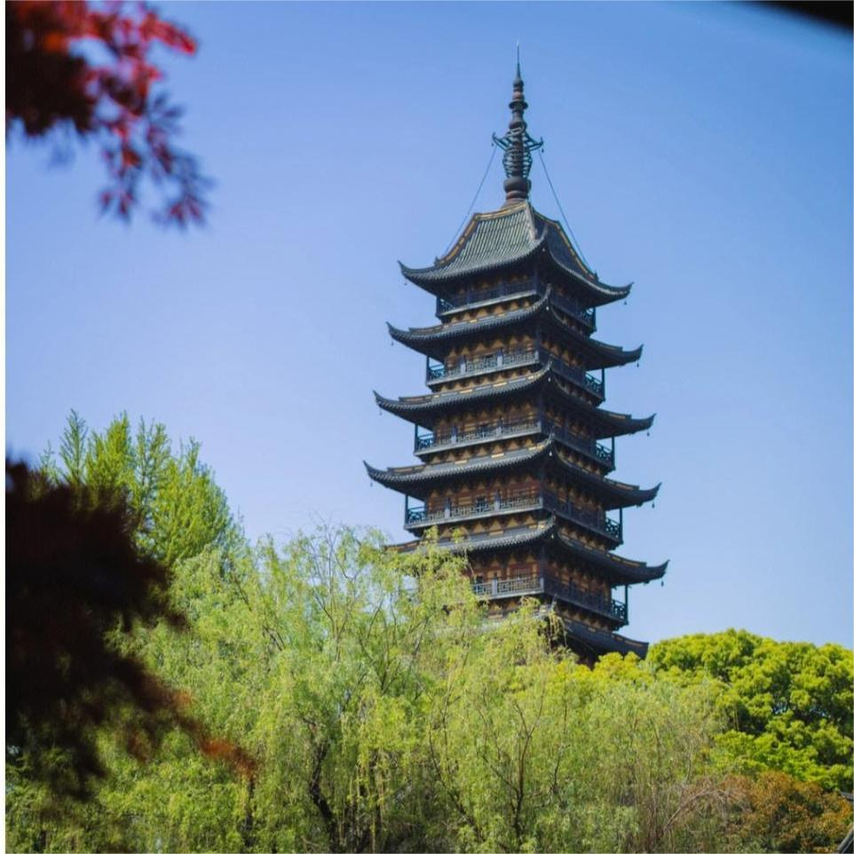

游遍常熟
虞山
虞山国家森林公园位于沙家浜畔、阳澄湖边。东南端伸入历史文化名城——江苏省常熟市，西南方与尚湖相依。公园处于北亚热带的边缘，其森林植被类型以亚热带常绿落叶桂叶混交林为主。虞山国家森林公园总面积1260公顷。虞山国家森林公园依偎着历史名城，和一批光芒四射的历史名人息息相关，文脉史迹极为丰富。虞山东岭，有商周逊国的仲雍墓及南方夫子言子墓；西岭，有商相巫咸墓、春秋石室、龙门摩崖石刻；齐梁古刹——兴福禅寺，坐落于北麓深山幽谷中，寺中堪称三绝的唐诗、宋书、清刻的常建《题破山寺后禅院》石碑，千古传颂。虞山还有元代大画家黄公望、民族英雄瞿式耜、清朝两代帝师翁同龢、两弹元勋王淦昌等人的墓园和文物，常熟深厚的文化积淀在这儿得到了充分的体现。

